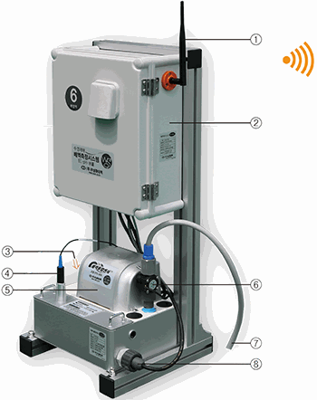
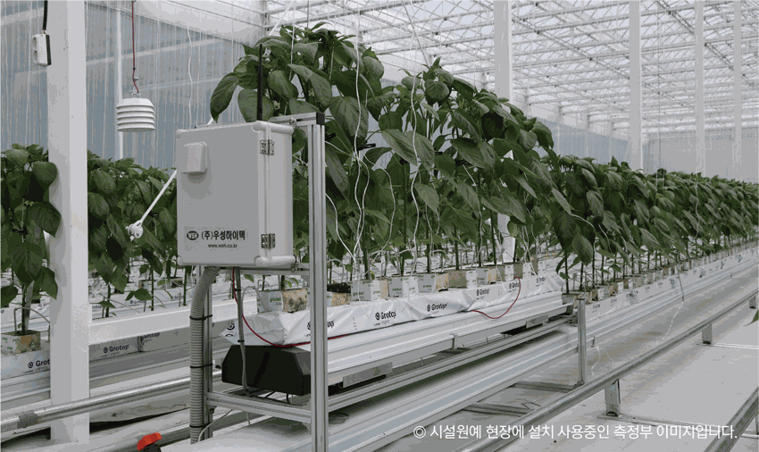

실시간 무선 측정DRAINAGE MEASUREMENT
수경재배 배액 측정시스템
EPSR-600작물에 흡수되지 않고 배출되는 배액의 상태를 측정합니다.
ECpH배액량
공급 농도와 공급량의 적정성을 확인하고 다음 공급 설정을 조절하는 근거로 활용배액의 EC·pH·배액량 또는 배지의 수분·온도를 측정하여 다음 양액 공급의 농도와 공급량을 결정하는 데 활용합니다.

실시간 무선 측정작물에 흡수되지 않고 배출되는 배액의 상태를 측정합니다.

표본 베드 중량 측정작물이 심긴 표본 베드의 무게와 온도를 측정합니다.